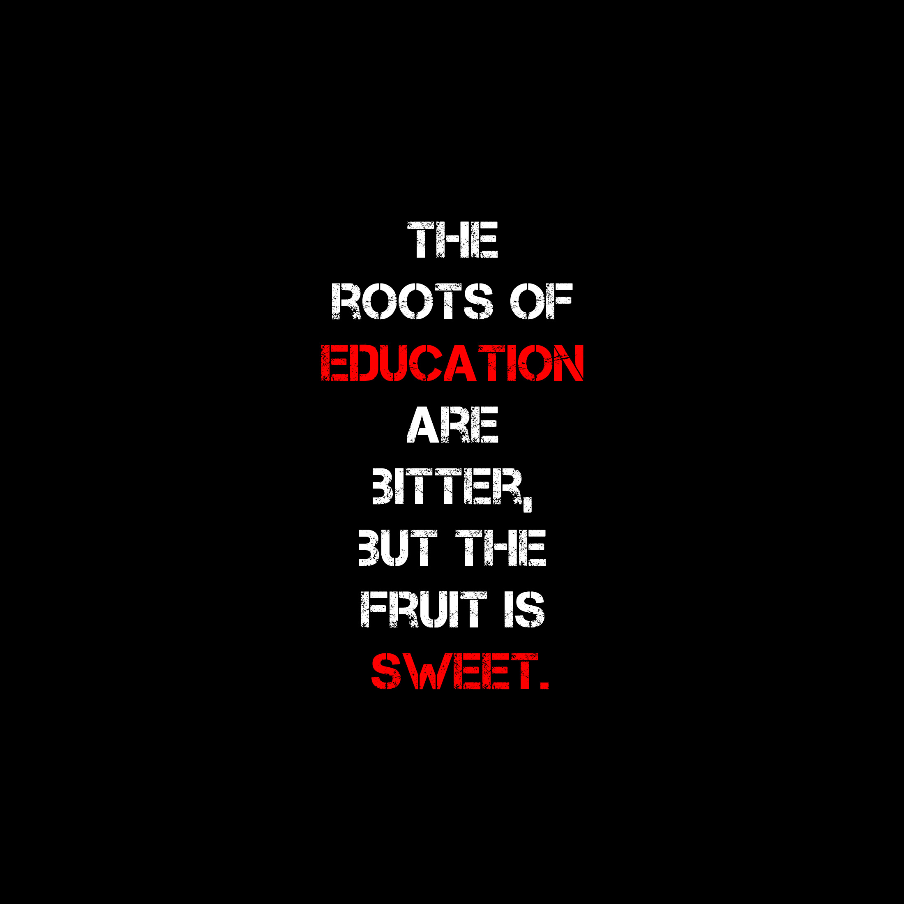

Hello world was my first project bywhich i created during my first learning coding in moringa school. hello world. it was a great and self fulfilling creating the project
cookie-recipe cookie-recipe was forking. what is forking? This is whereby one is able to apply changes to someone else' project and impement his own ideas without affecting the main project
my-first-website. This was was my first ever website that i did.it was about coding and the things i am going to learn ahead.
my name is xystus,male in my teen. I finished my International General Certificate of Secondary Education (IGCSE) in 2018 in elite school.
No matter how hard you work at your craft and no matter how successful you become, people just have to find something negative to hang on you. The bar is always being raised as you go. The rules are always being rewritten. There is aggravation that comes with that, but that is a part of what makes triumph so sweet. Charles Barkley. i love basketball.it is a game whickh is fun and has principals.its a game with respect and history